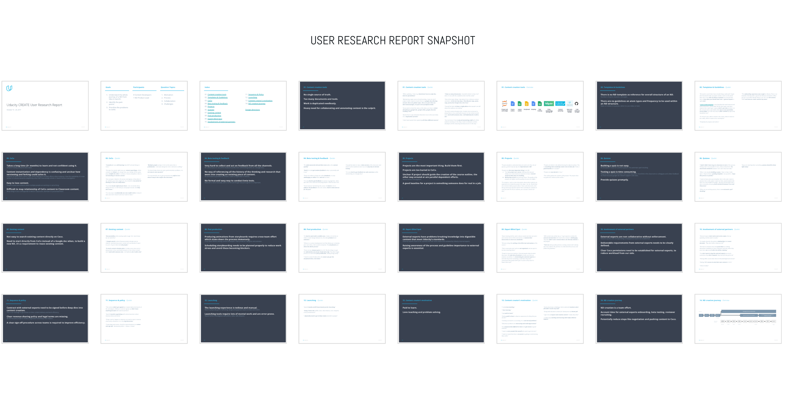
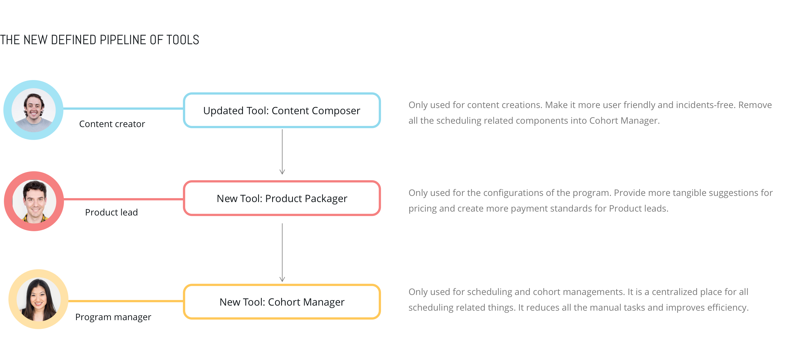
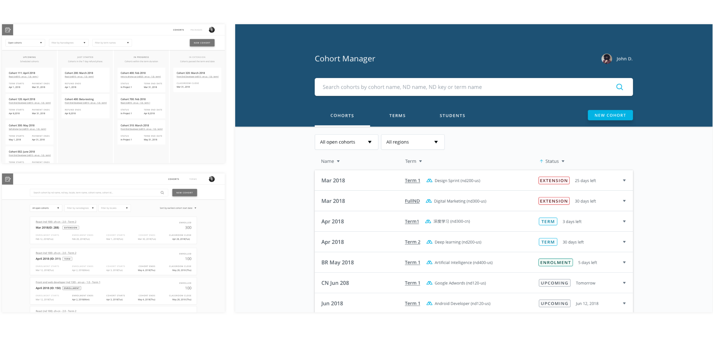
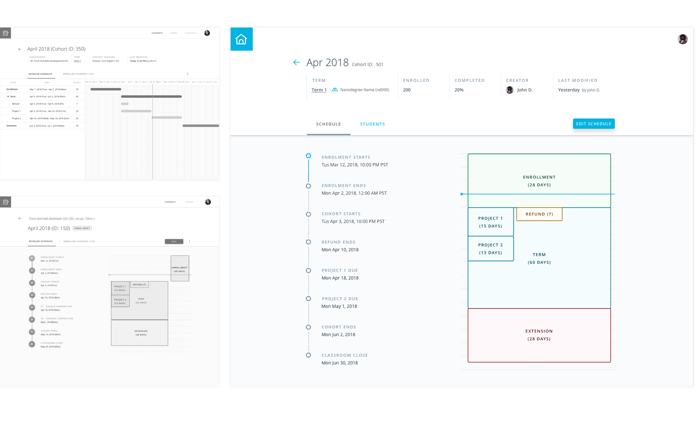
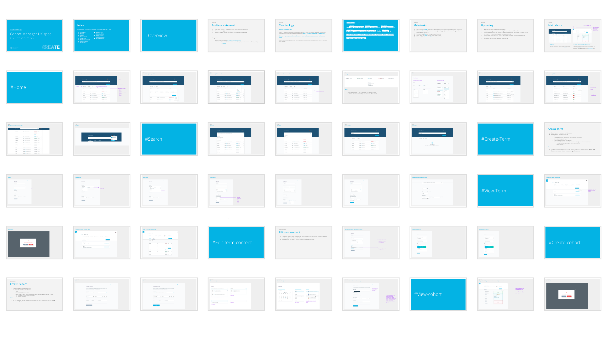
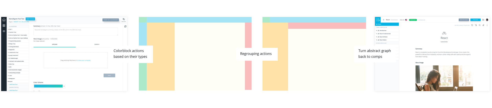

Udacity CREATE
Design a series of tools and processes to make Udacity a platform company at scale
Duration: September 2017 - present | Role: Lead Product designer
Duration: September 2017 - present | Role: Lead Product designer
01. Background
Since September 2017, I have been collaborating with remote Creative Director Antonio Costa in the Udacity CREATE team to conduct the company's biggest initiative to make it a online learning platform at scale. Udacity's paid programs have gained students from 15K to 50K in less than a year and the current process to launch a program can no logner support the massive growth. We need a new way to scale the entire content production.
But where shall we start? At the very beginning, we have these questions:
- 1. What's the whole process of a nanodegree program from idea to launch?
- 2. What are the pain points on that journey?
- 3. What problems should we prioritize?
02. Early Stage: User Research
I initiated the user research by interviewing 4 content developers and 2 Nanodegree product leads. We covered topics around motivation, process, collaboration and challenges. Later I summarized all the key words they said and synthesized 14 main themes, illustrated the stakeholder and journey maps
One of the major challenges is no single source of truth and the duplication of work as users have to go to multiple tools to have their work done, which led to our following design directions.
- 


03. Early Stage: Design directions

04. Early Stage: Design explorations

Then I tested these concepts with our internal content creators, the idea got them really excited about is one single tool that enables them to create/edit/comment content. We then designed more details of this concept that combines the classroom (students facing) and the content composer tool (creators facing) in one single unified environment, to reduce the friction among consuming / previewing /creating content and made the product proposal.


05. Direction change: this is a startup...
So we expanded our users to product leads and PMs and relooked at the journey map and identified what the problems we need to solve right now. We focus on clarifying the roles and authorizations of the tools and build a stable infrastructure that would allow us to scale freely in the near future. 
06. Case Study:Cohort Manager App
This is a brand new app I designed to improve program managers' work efficiency and reduce incidents caused by schedules. With the company's programs switching to cohort based structure, we are facing the following challenges
- 1. No overview of the whole schedule of a cohort and PMs have to calculate the dates themsevles in the spreadsheets.
- 2. The schedule of a cohort is affected by data from multiple tools, there is no single source of truth.
- 3. The creation is very manual and sometimes requires a PM to directly write into a database.
Problems
- I switched from a "too smart" landing page to a simplied version after conducting user testing. Focus more on the “search” functionality and make information less crowded by identifying primary/secondary data of a cohort. 
Iteration 1 - Cohort Landing Page
- I explored different ways of displaying the relationship between durations and important due dates. A visual duration graph got the final win because it is simple and straightforward. 
Iteration 2 - Cohort Scheduling Page
- In order to ship tools as quickly as possible and reduce front-end cost, we tried to create and use more sharable UI components across all app pages and all internal tools
Reusable UI components

snapshot of my UX spec
07. Case Study:Content Composer App
The exisiting content creation tool has a series of user experience issues. Here are some examples about my thinking process and how I addressed problems.
- The app has very messy navigations, I abstracted them based on the different level of controls they manage (global/program/contextual) and regrouped them, later I verified the new navigation by testing them with new users and they can navigate the site and complete tasks successfully. 
Example 1
- Content creators want to undo unexpected edits, but all the programs at Udacity is in a tree structure. If we simply follow the google doc history patten, then when a user accidently deletes a lesson from a course, and recovers by just rolling back the history of the whole course, then all the nested lessons that has been edited will lose their changes. How can a user recover a deleted page without affecting its "siblings"? I got inspirations by looking at many creation tools. And here is the solution: The history panel only shows history of the page only. Rolling back history only changes the version of the page. And using trash can concept to restore a “page” without affecting its “sibling” pages. It will be restored back under its original parent page.
Example 2

8.Reflection: Startup VS Big Company
This is my first time to design a whole company's workflow and I have learned so many things in a short amount of time.
Big companies like Microsoft usually have more engineering resources and have the time and budget to plan and test a product.
But in a startup, you have to show small accompaniments much more often and faster. I learned to prioritize problems and do the right thing with the right scope at the right time.
However, the pace should not sacrifice with a stable infrastructure. Things gonna eventually break and won’t be able to scale if a holistic experience is not well considered.